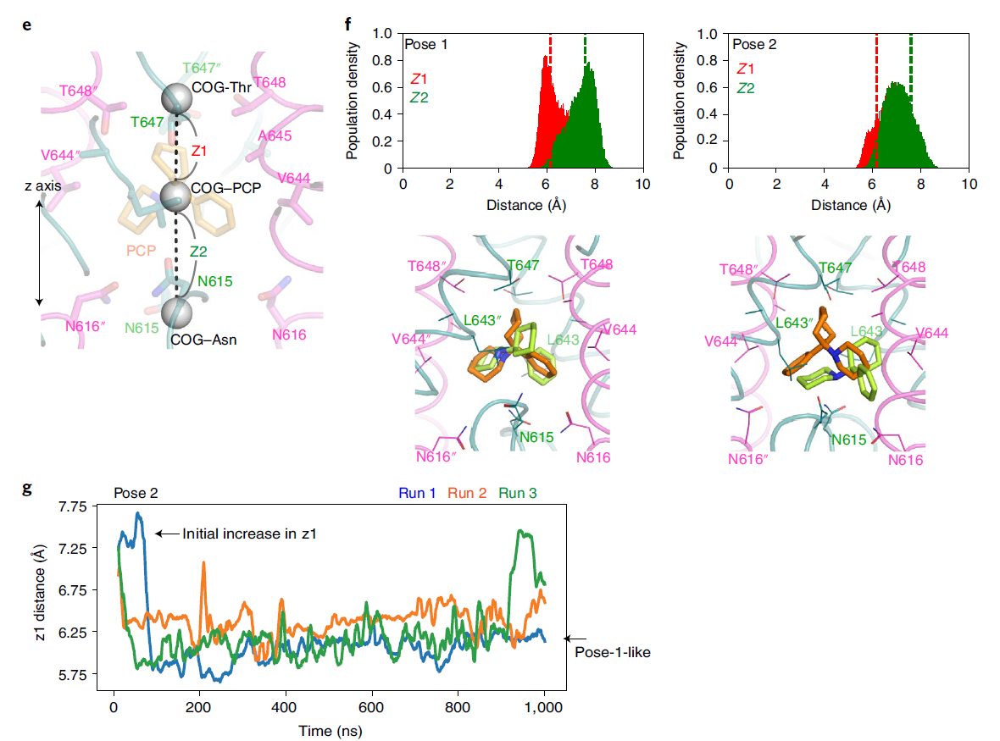

class: center, middle ## Structural insights into binding of therapeutic channel blockers in NMDA receptors Chou et al., <i>Nature structural & molecular Biology</i> 2022 .center[] <div style="height: 20px"> </div> .credits[Chloe Geoffroy - Paoletti’s team Lab Meeting 21/09/2022] <div style="height: 20px"> </div> .affiliations[ ] --- <h3> Introduction: Channel blockers, diverse array of clinical effects </h3> <div class=" flex jsce "> <div class="flex col center "> <div><img src="images/m.png" width="50%" /></div> <div> <h4> <strong>Memantine</strong> </h4> <p>Treatment of moderate to severe <strong> Alzheimer’s disease </strong> <br> Under clin. trial for epileptic encephalopathy</p> <p> <strong>Well tolerated</strong> </p> </div> </div> <div class=" flex col center "> <div><img src="images/k.png" width="30%" /></div> <div> <h4> <strong>Ketamine</strong> </h4> <p>Initially approved as an anesthetic <br> Efficacy as a <strong>rapid antidepressant</strong> <br> and in treatment of pain </p> <p>Drug of abuse, <strong>poorly tolerated</strong> (psychotomimetic side effects at therapeutic doses) </p> </div> </div> <div class=" flex col center"> <div></div> <div> <h4> <strong>PCP</strong> </h4> <p>Antidepressant properties </p> <div style="height: 20px"> </div> <p>Very important <strong>psychotomimetic side effects</strong> </p> </div> </div> </div> <div style="height: 90px"> </div> <div style="text-align: center; display: flex; flex-direction: column; justify-content:flex-end;"><h4> <strong> Why ? </strong> </h4></div> --- <h3> Introduction: Channel blockers, diverse array of clinical effects </h3> <h4>Many hypothesis: <br> <u>Ex1</u> - Pharmacological differences between memantine and ketamine</h4> <div class=" flex jsca "> <div class="flex col center "> <div><img src="images/b.png" width="0%" h/></div> <div> <div style="height: 140px"> </div> <p> <strong>Other targets</strong> </p> <div style="height: 10px"> </div> <p> <strong>Effects of drug <br> metabolites </strong> </p> </div> </div> <div class=" flex col center "> <div><img src="images/m.png" height="100vh" /></div> <div> <h4> <strong>Memantine</strong> </h4> <div style="height: 5px"> </div> <p>acetylcholine Rs <br> serotonin 5-HT3 Rs</p> <div style="height: 0.5px"> </div> <p>No active metabolites reported</p> </div> </div> <div class=" flex col center"> <div><img src="images/k.png" height="100vh" /></div> <div> <h4> <strong>Ketamine</strong> </h4> <div style="height: 0.002%"> </div> <p>dopamine D2 Rs <br> serotonin 5-HT2Rs <br> HCN1 channels</p> <p>Norketamine, hydroxynorketamine</p> </div> </div> </div> <div style="height: 60px"> </div> <div style="font-size: 60%;"> Johnson et al., <i>Curr. Op. Pharmacol.,</i> 2015 </div> --- <h3> Introduction: Channel blockers, diverse array of clinical effects </h3> <h4>Many hypothesis: <br> <u>Ex2</u>-Drugs’ mechanism of interaction with NMDARs</h4> <div class=" flex jsca "> <div class="flex col center "> <div><img src="images/b.png" width="0%" h/></div> <div> <div style="height: 140px"> </div> <div style="height: 10px"> </div> <p> Preservation of physiological <br> NMDAR function <br> → fewer side effects </p> </div> </div> <div class=" flex col center "> <div><img src="images/m.png" height="100vh" /></div> <div> <h4> <strong>Memantine</strong> </h4> <div class="cadre2"> <p>Partial trapping <br> antagonist (50-70%) </p> <div style="height: 1px"> </div> <p>Fast off rate</p> </div> <p>Promote channel closure</p> <p>Binding to additional superficial site</p> </div> </div> <div class=" flex col center"> <div><img src="images/k.png" height="100vh" /></div> <div> <h4> <strong>Ketamine</strong> </h4> <div class="cadre"><p>High trapping antagonist <br> (86%) </p> <p>Slow off rate</p></div> <div style="height: 50px"> </div> <p>Possible access through membrane</p> </div> </div> <div class="flex col center "> <div><img src="images/b.png" width="0%" h/></div> <div> <div style="height: 140px"> </div> <div style="height: 25px"> </div> <p> Could explain in part the <br> psychomimesis </p> </div> </div> </div> <div style="font-size: 60%;"> Song et al., <i>Nature,</i> 2018 <br> Glasgow et al., <i>J. Neurosci.,</i> 2017 <br> Phillips et al., <i>Brain Neurosci.,</i> 2020 <br> Orser et al., <i>Anesthesiology.,</i> 1997 <br> </div> --- <h3> Introduction: Channel blockers, diverse array of clinical effects </h3> <h4 style="margin-bottom: 0.3em;">Many hypothesis: <br> <u>Ex2</u>-Drugs’ mechanism of interaction with NMDARs</h4> <div class=" flex jsca "> <div class="flex col center "> <div></div> </div> </div> <div style="font-size: 60%;"> <sup>a</sup> Kotermanski et al., <i>J Neurosci.,</i> 2009 <br> <sup>b</sup> McClymont et al., <i>Eur J Pharmacol.,</i> 2012 <br> <sup>c</sup> Glasgow et al.,<i>J.Neurosci.,</i> 2017 <br> <sup>d</sup> Dravid et al.,<i>J. Physiol.,</i> 2007 <br> </div> --- ### GluN1/GluN2B channel blocking patterns of memantine, ketamine & PCP <div class=" flex col center"> <div style="height: 50px"> </div> <div><img src="images/cinet1.png" height="100%" width="100%" /></div> <div> <div style="height: 40px"> </div> <p>Hierarchy of NMDARs blockers compounds on- and off-speeds <br> PCP < S-ketamine < memantine </p></div> </div> --- ### GluN1/GluN2B channel blocking patterns of memantine, ketamine & PCP <div class=" flex col center"> <div style="height: 50px"> </div> <div></div> <div> <div style="height: 40px"> </div> <p>Hierarchy of NMDARs blockers compounds on- and off-speeds <br> PCP < S-ketamine < memantine </p> <p>Reminescent of the different extent of side effects induced by these compounds <i>in vivo </i></p></div> </div> --- ### Cryo-EM structures and MD simulations of channel blockers <video width="90%" height="100%" controls><source src="./test4.mp4" type="video/mp4"></video> <div style="font-size: 60%;"> Chou et al., <i> Nature structural & molecular biology</i> 2022 </div> --- ### GluN1/GluN2B NMDAR in complex with PCP <div class=" flex col center"> <div></div> <div></div> <div> <p>Compound stabilized by hydrophobic interactions at the Thr ring and hydrophobic ring of the TMD; <br> involve SYTANLAAF motif residues</p></div> </div> --- ### MD simulation: Stability of PCP bound to GluN1/GluN2B TMD <h4 style="margin-bottom:0.3em ;"> Assessment of compound movement toward the Asn ring along the z axis</h4> <div class=" flex col center"> <div></div> <div> <p>Dynamic interactions between PCP and binding site residues <br> Pose 1 more stable than pose 2</p></div> </div> --- ### GluN1/GluN2B NMDAR in complex with S-ketamine <div class=" flex col center"> <div><img src="images/k.png" height="10%" width="10%" /></div> <div><img src="images/keta1.png" height="80%" width="90%" /></div> <div> <div style="height: 35px"> </div> <p>Ketamine binds to a similar BS to PCP BS in TMD : interactions with the Thr ring and hydrophobic ring <br> More information at higher resolution compared to previous papers</p></div> </div> --- ### MD simulation: Stability of ketamine bound to GluN1/GluN2B TMD <h4 style="margin-bottom:0.3em ;"> Assessment of compound movement toward the Asn ring along the z axis</h4> <div class=" flex col center"> <div style="height: 35px"> </div> <div></div> <div> <div style="height: 35px"> </div> <p>S-ketamine in poses 2 → 4 stably resides at the defined z-axis position in the BS </p></div> </div> --- ### GluN1/GluN2B NMDAR in complex with memantine <div class=" flex col center"> <div><img src="images/m.png" height="10%" width="10%" /></div> <div><img src="images/m1.png" height="80%" width="90%" /></div> <div> <p> Pseudo-tetrahedral density → 1 pose <br> Interactions with the Thr ring and hydrophobic ring (similarly to PCP and ketamine) <br> 1 H-bond with GluN2B Asn615 from the Asn ring </p></div> </div> --- ### MD simulation: Stability of memantine bound to GluN1/GluN2B TMD <h4 style="margin-bottom:0.3em ;"> Assessment of V-dependent channel blocade → MD simulation at +70 and -70 mV</h4> <div class=" flex col center"> <div><img src="images/m.png" height="10%" width="10%" /></div> <div><img src="images/m2.png" height="80%" width="90%" /></div> <div> <p>Lower extent of channel blockade in part facilitated by decreased propency <br> for H-bond formation between memantine and GluN2B Asn 615 vs at more negative potential</p></div> </div> --- ### Blocker binding alters local structure of the Thr ring <div class=" flex col center"> <div style="height: 15px"> </div> <div></div> <div> <div style="height: 45px"> </div> <p>In the active form of GluN1/GluN2B: 2 populations representing H-bonded and non-H-bonded configurations of the Thr ring</p></div> </div> --- ### Blocker binding alters local structure of the Thr ring <div class=" flex col center"> <div><img src="images/dp2.PNG" height="80%" width="90%" /></div> <div> <p>Decrease of the non-H bonded population in all Thr residues with the binding of blockers <br> → blockers binding facilitates H-bond formation between Thr HO group and main chain CO group <br> → Enables Thr methyl group to increase the local hydrophobicity and favors hydrophocic interactions with the blockers </p></div> </div> --- ### Binding elements control the kinetics of channel blockade #### Study of inhibitory potency (TEVC) and on-, off-speeds (patch HEK) <div class=" flex col center"> <div><img src="images/cinmut1-01-01.png" height="120%" width="110%" /></div> <div> <p>Thr ring mutants GluN2B T647S → ↘ nbr of methyl groups from 4 to 2 → less hydrophobic interactions <br> → For all the blockers: lower potencies and slower off-speeds // no changes in on-speeds </p></div> </div> --- ### Binding elements control the kinetics of channel blockade <div class=" flex col center"> <div></div> <div> <p>Hydrophobic ring mutant GluN2B L643A → less important hydrophobic surface, more distant from blocker <br> → Similar results on potencies and kinetics compared to the previous mutation</p></div> </div> --- ### Binding elements control the kinetics of channel blockade <div class=" flex col center"> <div><img src="images/cinmut3-01.png" height="120%" width="110%" /></div> <div> <p>Other hydrophobic ring mutant GluN1 V644A: ↘ ketamine inh potency and Ʈ<sub>off</sub> but NC for PCP <br> Residue important for ketamine but the others have a bulkier structure and may fit better in the mutant receptor BS </p></div> </div> --- ### Binding elements control the kinetics of channel blockade <div class=" flex col center"> <div><img src="images/cinmut4-01.png" height="120%" width="110%" /></div> <div> <p> GluN2B Asn 615 protrude toward the blockers BS where only memantine forms H-bond <br> Asn ring mutant GluN2B N615Q → longer side chain likely disfavor H-bond by steric hindrance <br> → For all mutants, NC in on-speeds <br> → Changes in potency mainly governed by alteration of off-speeds </p></div> </div> --- ### Conclusion <div class=" flex col center"> <div style="height: 15px"> </div> <div><img src="images/fin.PNG" height="60%" width="60%" /></div> </div> - 3 blockers bind to a site in the pore composed of 3 layers : Thr, Hydrophobic & Asn ring - Binding interactions mainly hydrophobic except for memantine - ≠ in potency of the 3 blockers likely stem for the extent of hydrophobic interactions - Blockers binding induce the non-H-bonded Thr to form H-bond → favors hydrophobic interactions btw the blockers & Thr methyl group <br> → Physical block of the pore and interacions with Thr ring to favor closure of channel gate (as suggested in Song et al., <i>Nature</i> 2018 and Blanpied et al., <i>J. Neurosci</i> 2005 ) --- ### Conclusion <div class=" flex col center"> <div style="height: 15px"> </div> <div><img src="images/fin.PNG" height="60%" width="60%" /></div> </div> - Revealed fundamental molecular elements from NMDAR channel blockade by clinically relevant compounds - More informations at higher resolution compared to last papers (Zhang et al., <i>Nature</i> 2021 ) - Do not explain everything but interesting for future development of active compounds --- ### GluN1/GluN2B channel blocking patterns of memantine, ketamine & PCP <div class=" flex col center"> <div style="height: 15px"> </div> <div><img src="images/Comparentre.PNG" height="80%" width="90%" /></div> <div> <p></p></div> </div> --- ### GluN1/GluN2B channel blocking patterns of memantine, ketamine & PCP <div class=" flex col center"> <div style="height: 5px"> </div> <div></div> <div> <p></p></div> </div> --- ### GluN1/GluN2B channel blocking patterns of memantine, ketamine & PCP <div class=" flex col center"> <div style="height: 15px"> </div> <div></div> <div> <p></p></div> </div> --- ### GluN1/GluN2B channel blocking patterns of memantine, ketamine & PCP <div class=" flex col center"> <div style="height: 15px"> </div> <div><img src="images/str.PNG" height="60%" width="50%" /></div> <div> <p></p></div> </div> ---